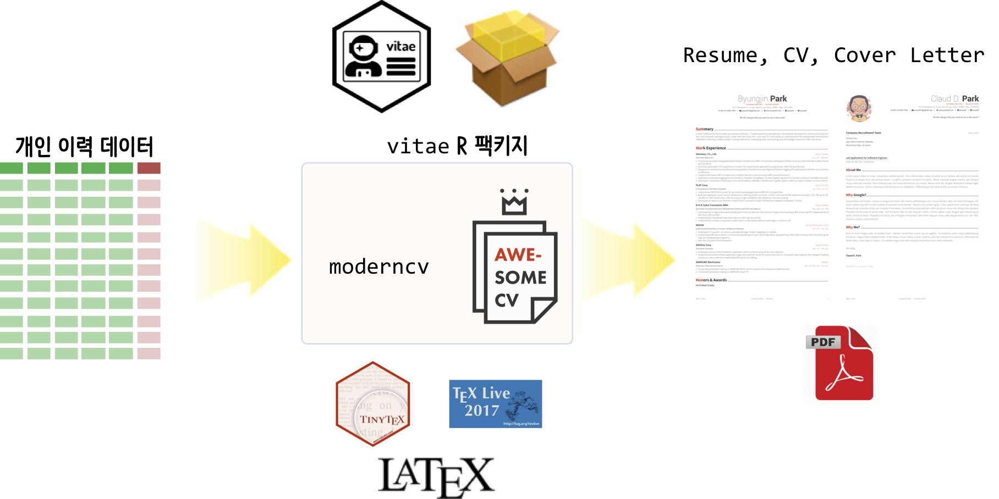

데이터 사이언스: 저작(Authoring)
이력서(Resume)
이력서관련 서류 1
직업을 구하기 위해서 이력서 관련 문서를 많이 만든다. 국문 이력서, 영문 이력서, 레쥬메, 커버레터, CV 등등 용어도 많고 다양하다. 이와 관련된 문서를 정리하는 것도 나름 도움이 될 듯 싶다. 먼저, 각각의 문서에 대한 정확한 정의부터 시작해보자.
- 커버레터(Cover Letter): 이력서가 있는데 커버레터를 작성하는 이유가 중요하다. 인사 채용을 담당하는 사람입장에서 하루 수백명의 구직자 서류를 마주한다. 따라서, 이력서를 요약한 4~5문단으로 간결하게 구성된 표지가 필요한데 이런 역할을 수행하는 것이 커버레터다. 이력서에 자세한 사항이 있기 때문에 채용공고(JD)와 관련된 핵심사항을 매칭되도록 (1)자기소개 및 경력기술 (2)회사에 지원 이유 (3)본인이 채용되어야 하는 이유 (4)마무리 형식으로 작성한다.

- 이력서(Resume): 미국기준으로 이력서(resume)는 역량기반(competency-based)으로 개인 마케팅 문서로 작성된다. 따라서, 지원자의 기술, 성과, 경력을 과장되지 않는 선에서 본인이 해당 업무에 적합함을 기술한다.
- 이력서(Curriculum Vitae, CV): CV는 자격기반(credential-based)으로 출신학교, 자격증, 연구논문, 특허, 과외활동 등을 쭉 적어 작성한다.
일반적인 영문 이력서 CV와 Resume에 대한 사례가 다음에 나와 있다.

R마크다운 2
R마크다운으로 이력서를 제작하는 붐이 한때 일었다. 이에 대한 결론은 vitae 팩키지에 관련 내용이 담겨있다. install.packages('vitae') 명령어로 vitae 팩키지를 설치하게 되면 영문기준으로 tinytex를 바탕으로 다양한 형태의 영문 CV, Résumés를 형태에 맞춰 작성할 수 있다.

원래 영문 이력서는 \(\LaTeX\) 기반으로 작성된 템플릿을 사용하는데 이력서 데이터를 데이터프레임 형태로 변환된다는 점에 착안하여 vitae 프로젝트가 시작된 듯 싶다. 사실 대부분의 HR 시스템에 인사관련 정보는 정형화된 형태 데이터로 저장되어 있는데 반정형 이력서 텍스트 데이터를 다시 정형 데이터 형태로 변형시켜 저장하게 된다.

awesome-CV 3
https://github.com/posquit0/Awesome-CV 웹사이트를 클론하여 관련된 사항을 정리하고 나서 다음과 같이 단순하게 만든다. cv.tex, resume.tex가 중요한 \(\LaTeX\) 파일이며 복잡한 \(\LaTeX\) 파일을 단순하게 하는 역할을 수행한다. Makefile 파일도 다음과 같은 구조를 반영하여 make resume.pdf 명령어와 make clean 명령어로 항상 깔끔한 형태가 되도록 정리한다.
resume/
├── Makefile
├── awesome-cv.cls
├── cv
│ ├── committees.tex
│ ├── education.tex
│ ├── experience.tex
│ ├── extracurricular.tex
│ ├── honors.tex
│ ├── presentation.tex
│ ├── skills.tex
│ └── writing.tex
├── cv.tex
├── fontawesome.sty
├── fonts
│ ├── FontAwesome.ttf
│ ├── Roboto-Bold.ttf
│ ├── Roboto-BoldItalic.ttf
│ ├── Roboto-Italic.ttf
│ ├── Roboto-Light.ttf
│ ├── Roboto-LightItalic.ttf
│ ├── Roboto-Medium.ttf
│ ├── Roboto-MediumItalic.ttf
│ ├── Roboto-Regular.ttf
│ ├── Roboto-Thin.ttf
│ └── Roboto-ThinItalic.ttf
├── icon.png
├── resume
│ ├── committees.tex
│ ├── education.tex
│ ├── experience.tex
│ ├── extracurricular.tex
│ ├── honors.tex
│ ├── presentation.tex
│ ├── summary.tex
│ └── writing.tex
├── resume.pdf
└── resume.texresume.pdf 파일을 생성하는데 필요한 Makefile을 다음과 같이 수정한다.
CC = xelatex
resume.pdf: resume.tex
$(CC) $<
cv.pdf: cv.tex
$(CC) $<
coverletter.pdf: coverletter.tex
$(CC) $<
clean:
-rm -f *.aux
-rm -f *.log
-rm -f *.toc
-rm -f *.bbl
-rm -f *.blg
-rm -f *.outThe Balance Careers, 'The Difference Between a Resume and a Curriculum Vitae'↩
[Mitchell O'Hara-Wild (@mitchoharawild) Rob Hyndman (@robjhyndman), "`vitae`, Résumés and CVs for R Markdown"](https://slides.mitchelloharawild.com/vitae/)'↩
Awesome CV is LaTeX template for a CV(Curriculum Vitae), Résumé or Cover Letter↩